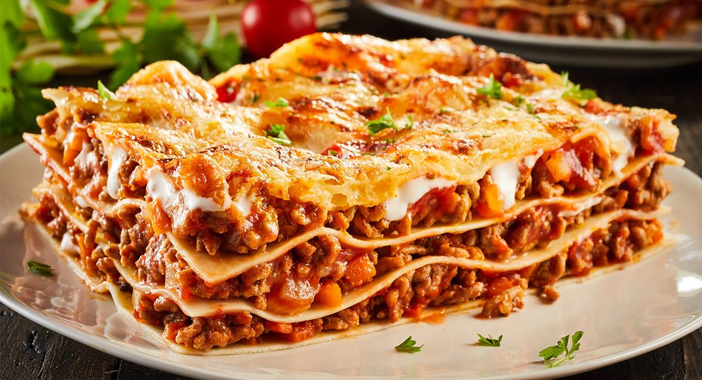

Receta lasagna

.
La lasaña es uno de esos platos que suelen gustar a todos y que, además, es muy completo.
Puedes prepararla con el relleno que más te guste y, aunque el proceso es algo laborioso, el horno hace casi todo el trabajo.
Te presento la receta de lasaña de carne y queso que hacemos en casa.
Ingredientes
- Cebolla 1
- Manteca 100 g
- Leche 1.5 L
- Harina 100 grs.
- Pasta seca para lasagna. 500grs.
- Queso mozzarella en fetas 300 grs.
- Carne picada 1 k
- Ajo 1 Diente
- Espinaca 200 g
- Salsa de tomate 400 cc
- Queso parmesano rallado> 200 g
- Jamón cocido 300 Fetas
- Vino blanco 1 Copa
- Nuez moscada 1 cda.
Paso a paso
PARA LA SALSA BECHAMEL :
- Calentar en una olla la leche con la harina. Mezclar bien hasta disolver la misma.
- Agregar la manteca, sal, pimienta blanca y nuez moscada rallada.
- Revolver constantemente hasta que espese.
PARA EL RELLENO DE CARNE :
- Picar la cebolla, rallar el diente de ajo. Sudar en una cacerola con aceite de oliva
- Agregar la carne picada, sellar hasta que este cocida.
- Desglasar con el vino blanco.
PARA EL ARMADO :
- Disponer una capa de salsa de tomate en el fondo del molde.
- Intercalar capas de pasta, de carne, salsa de tomate, salsa bechamel, espinaca, jamón y muzarella.
- Terminar con una capa de salsa bechamel, con mucho queso parmesano rallado.
- Llevar a horno a 180° por 10 minutos para gratinar y terminar la cocción de la misma.
Volver